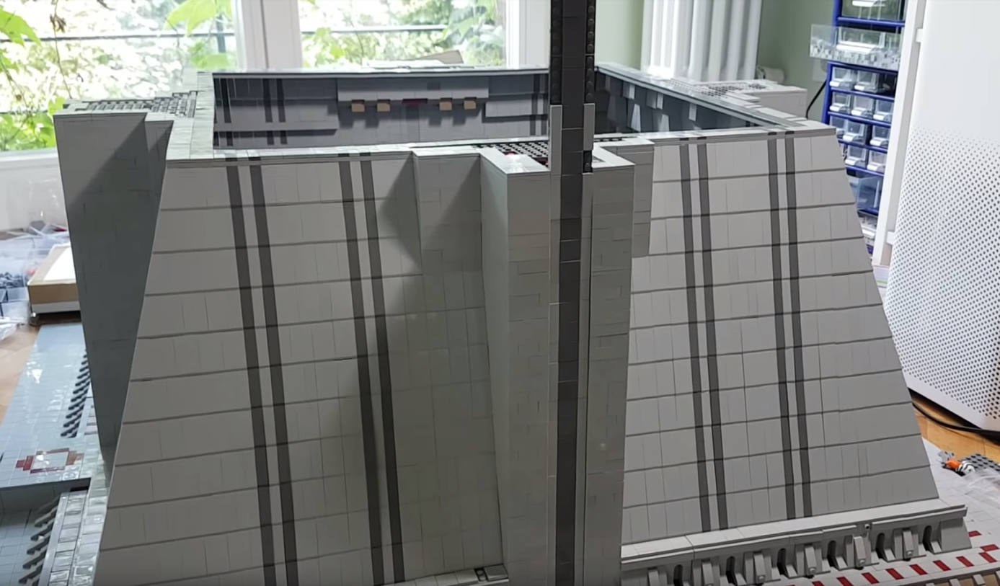
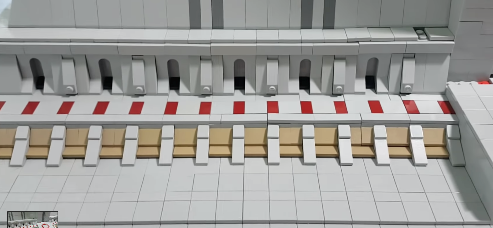
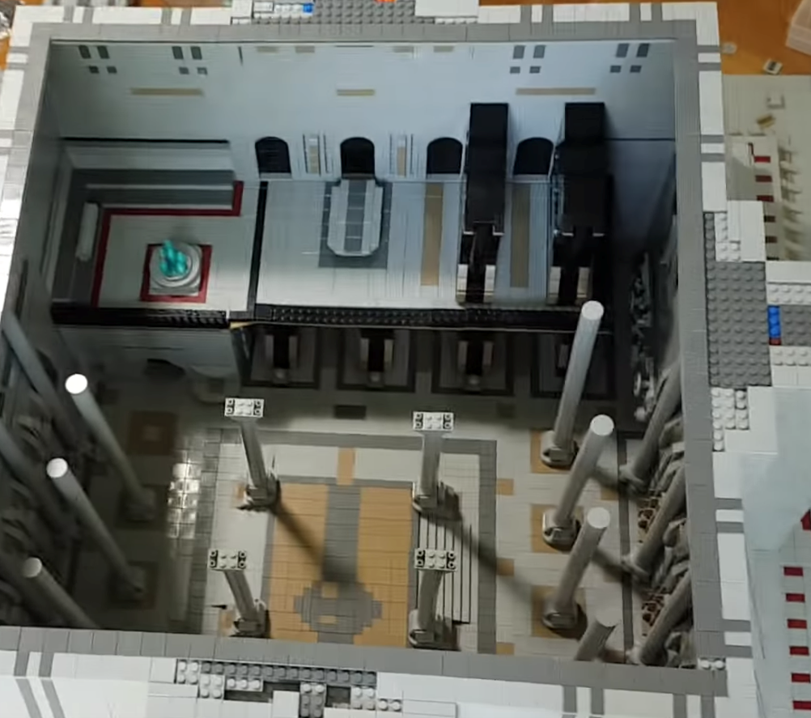
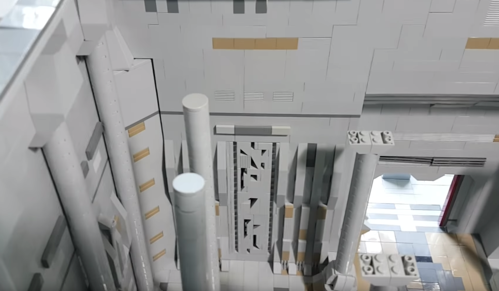

Building the Jedi Temple
Part 4 – Half a year later
7/18/19
We’re now six months into building the Jedi Temple and nearly finished.
As you can tell from the picture, the outside walls are all set and only the roof is missing. One big challenge during this process was achieving sufficient stability. Even though it was clear that this version of the Jedi Temple wasn’t going to Bricking Bavaria 2018 and so stability wasn’t key, nevertheless it was one important aspect not to overlook. So why was it not easy to build those massive walls in a solid way? One big reason is the limited space which is available. As the temple is somewhat shaped like a pyramid, in order to limit loss of interior space to a minimum, I was not able to use as many filler bricks, as I would’ve wanted to. Another reason was simply – one you will all know – money. Acquiring filler bricks in the quantity I would’ve needed to, in order to create maximum stability, would’ve burnt a hole in my pocket. Obviously, something I wanted to avoid;)
During this stage of the build, nearly all of the front space was tiled. This did take a lot of time and tiles, but I think it was well worth. Even though I have to admit that increasing the interior space by decreasing the space in front of the Jedi Temple’s outside walls was a good decision. Not only did it give me more freedom when it came to creating the temple’s interior, but I also avoided buying unnecessary amounts of new tiles.
Apologies for the lack of quality when it comes to this picture, but sadly I didn’t find a better one. The interior is nearly finished. All of the pillars are done, the archives are completely finished, except a few book shelves. The holocron chambers are nearly done as well as the Jedi command center.

I’m really glad how everything turned out. Even though most of the pillars will be only for cosmetic reasons, since the temple is now far higher than I initially thought. They would just make no sense at 40cm height and a width of 2x2 studs. Tiling is also nearly done. I did try to make it look a little less grey than the rest of temple by using dark tan and dark gray. Again, I have to emphasize that the original temple is more of a tan colored building, but I just have far more light bluish grey bricks available and as you all know certain tan colors can be quite rare and very expensive to purchase. Thank you as all ways for reading this blog post and have great day In the next episode I will discuss the interior with and take a look at the roof construction. Feel free to hit me up on Instagram or YouTube if you have any questions regarding the Jedi Temple. And if you haven’t yet, check out the english review on my channel;)